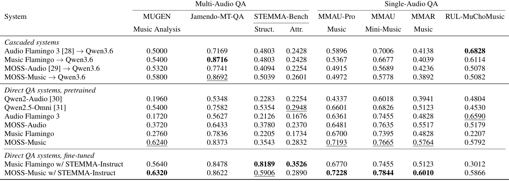
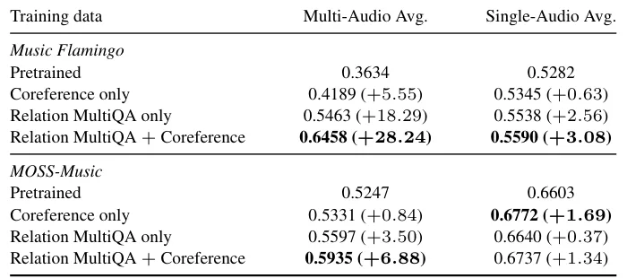

O problema: modelos tratam cada gravação como ilha isolada
Modelos de áudio-linguagem grandes (LALMs) especializados em música já conseguem gerar legendas, responder perguntas sobre teoria musical, estrutura e instrumentação. Mas quase todos operam sobre gravações isoladas: cada faixa é tratada como um item independente, sem relação conhecida com outras.
Na prática, entender música muitas vezes exige comparar trechos e raciocinar sobre relações: dois excerpts vêm da mesma faixa? Pertencem à mesma seção? Qual stem pertence a qual mixagem? Aplicações emergentes — busca, arranjo, descoberta de samples — dependem exatamente desse tipo de raciocínio cruzado.
Datasets de question-answering em música existentes comparam faixas amostradas de forma independente, sem relação de produção conhecida. Alguns trabalhos recentes começaram a explorar comparação explícita entre pares de áudios, mas o desempenho cai à medida que o conjunto de candidatos cresce. Mais importante: nenhum explorou sistematicamente a proveniência conhecida — a hierarquia música–seção–stem — disponível em dados de produção musical.
A ideia: inverter a lógica, partir da relação e buscar os áudios
O STEMMA é um framework de question-answering multi-áudio que constrói perguntas e respostas a partir de proveniência de produção: se dois excerpts compartilham uma faixa ou uma seção, e qual stem pertence a qual mixagem. A inovação central está na estratégia de construção.
Em vez de amostrar áudios primeiro e depois tentar encontrar relações entre eles — o que resulta em relações raras e esparsas —, o STEMMA adota uma estratégia relation-first: especifica a relação alvo antes de amostrar áudio. Uma única consulta ao catálogo retorna tanto exemplos que satisfazem a relação quanto near-misses que a violam.
Os rótulos são determinados diretamente pela proveniência do catálogo, não gerados por um modelo de linguagem a partir de metadados. Isso garante que as respostas sejam objetivamente verificáveis e que o dataset capture relações estruturais reais entre unidades musicais hierárquicas.

Como funciona: dois componentes, dois papéis
O STEMMA gera dois tipos de dados de instrução. O primeiro, Relation MultiQA, cria perguntas sobre relações estruturais e de atributos musicais. Relações estruturais incluem: dois excerpts vêm da mesma faixa? Da mesma seção? Um stem pertence a uma mixagem? Relações de atributo comparam propriedades musicais: qual áudio tem BPM mais alto? Qual está em tonalidade maior?
O segundo componente, Coreference, ensina o modelo a resolver referências cruzadas entre múltiplos áudios. Perguntas como 'o segundo áudio tem vocais?' ou 'a primeira faixa está em modo maior?' exigem que o modelo localize evidência em cada entrada antes de inferir a relação entre elas. Isso é o que os autores chamam de cross-audio grounding.
A construção relation-first permite controlar a distribuição de relações no dataset. Em vez de depender da frequência natural de co-ocorrência no catálogo — que tornaria relações estruturais raríssimas —, o sistema garante cobertura balanceada de relações positivas e negativas. Hard negatives são recuperados automaticamente: faixas que quase satisfazem a relação mas falham em um aspecto crítico.
STEMMA-Bench e STEMMA-Instruct: avaliação e treinamento
Os autores construíram dois datasets. O STEMMA-Bench é um benchmark de avaliação held-out, com seções e stems de faixas completas, separado por faixa do conjunto de treino. Ele mede tanto relações estruturais (mesma faixa, mesma seção, stem-para-mixagem) quanto relações de atributo (BPM, tonalidade, modo, gênero).
O STEMMA-Instruct é o conjunto de treinamento, disjunto por faixa do benchmark. Os autores fizeram instruction-tuning de dois LALMs — Music Flamingo e MOSS-Music — sobre esse dataset. A hipótese: treinar explicitamente sobre relações de proveniência melhora raciocínio multi-áudio sem degradar entendimento de áudio único.
Para avaliar retenção de capacidades single-audio, os autores mediram desempenho em quatro benchmarks de música de áudio único: MMAU-Pro, MMAU, MMAR e RUL-MuChoMusic. Isso permite verificar se o ganho em raciocínio multi-áudio vem às custas de capacidades já adquiridas.
Resultados: ganhos grandes em relações estruturais, retenção em áudio único
Treinar sobre STEMMA-Instruct melhorou todos os benchmarks multi-áudio para ambos os backbones. No Music Flamingo, os ganhos foram: 28,8 pontos percentuais em MUGEN: Music Analysis, 6,4 em Jamendo-MT-QA, 59,8 nas relações estruturais do STEMMA-Bench e 17,9 nas relações de atributo. No MOSS-Music, os ganhos foram menores mas consistentes: 0,8, 2,5, 23,6 e 0,6 pontos, respectivamente.
O padrão é claro: backbones com desempenho pré-treinado mais baixo ganham mais. O MOSS-Music já era o sistema direto pré-treinado mais forte no MUGEN: Music Analysis (0,6240) e se moveu menos; o Music Flamingo partiu de 0,2760 e teve o maior salto.
Importante: o desempenho single-audio foi retido e até melhorou em todos os benchmarks. O Music Flamingo ganhou 8,1 pontos no RUL-MuChoMusic. Isso confirma que treinar sobre relações multi-áudio não degrada capacidades de entendimento de áudio único — ao contrário, pode reforçá-las.

Cascatas versus modelos diretos: onde cada um vence
Os autores compararam sistemas diretos de áudio-QA com sistemas em cascata. Nestes últimos, um modelo de áudio-linguagem gera legendas independentes para cada entrada, e um LLM de texto (Qwen3.6-35B-A3B) raciocina sobre as legendas resultantes.
No Jamendo-MT-QA, o melhor sistema da tabela é uma cascata: 0,8716 contra 0,8622 para o melhor modelo treinado. Isso reflete o próprio relato do Jamendo-MT-QA de que baselines baseados em caption permanecem competitivos. Comparações entre faixas coletadas de forma independente são em grande parte respondíveis a partir de descrições por faixa.
Mas nas relações estruturais do STEMMA-Bench a ordem se inverte e a margem é ampla: o melhor modelo treinado atinge 0,8189 contra 0,5039 para a melhor cascata. O Music Flamingo treinado supera sua própria cascata em 33,9 pontos. Relações entre excerpts que compartilham uma fonte não são respondíveis apenas por descrições independentes — exigem raciocínio direto sobre os áudios.
Ablação: perguntas relacionais contribuem mais que correferência
Para entender o que impulsiona os ganhos, os autores fizeram ablação sobre os dois componentes do STEMMA-Instruct. Treinar apenas com Coreference trouxe ganhos modestos: 5,55 pontos de média multi-áudio para Music Flamingo, 0,84 para MOSS-Music. Treinar apenas com Relation MultiQA trouxe ganhos maiores: 18,29 e 3,50 pontos, respectivamente.
Combinar ambos — o STEMMA-Instruct completo — produziu os melhores resultados: 28,24 pontos de ganho médio multi-áudio para Music Flamingo, 6,88 para MOSS-Music. As médias single-audio também ficaram acima dos níveis pré-treinados em ambos os casos.
Isso indica que perguntas sobre relações estruturais e de atributo são o componente mais valioso, mas que resolver correferências entre áudios adiciona capacidade complementar. A combinação é sinérgica: cada componente aborda um aspecto diferente do raciocínio multi-áudio.

O que o paper não mostra: limitações e escopo
O STEMMA depende de catálogos musicais estruturados com metadados de proveniência. Isso limita sua aplicação a cenários onde stems, seções e hierarquias de produção estão disponíveis. Música distribuída apenas como mixagem final — a maioria das gravações comerciais — não pode ser usada diretamente.
Os experimentos cobrem dois backbones (Music Flamingo e MOSS-Music) e quatro benchmarks single-audio, mas não exploram outros modelos multi-áudio recentes ou datasets de comparação de áudio fora do domínio musical. Não está claro como a estratégia relation-first generalizaria para áudio de fala, ambiental ou efeitos sonoros.
O paper não reporta tempos de treinamento, custo computacional ou tamanho final dos datasets. Também não discute como o sistema lida com relações ambíguas — por exemplo, seções que compartilham material mas não são idênticas, ou stems processados que divergem da fonte original.
Finalmente, os ganhos são assimétricos: Music Flamingo melhora muito mais que MOSS-Music. Isso sugere que o benefício do STEMMA-Instruct depende do ponto de partida do modelo. Backbones já fortes em raciocínio multi-áudio podem ter menos a ganhar, ou podem precisar de estratégias de tuning diferentes.
Por que isso importa
O STEMMA mostra que explorar proveniência de produção — informação estruturada sobre como música é construída — melhora raciocínio multi-áudio de forma mensurável. A estratégia relation-first é generalizável: sempre que você tem relações conhecidas entre itens, pode inverter a lógica de amostragem para garantir cobertura balanceada.
A separação entre relações estruturais e de atributo é reveladora. Cascatas de caption competem bem em atributos musicais, mas falham em relações estruturais que exigem evidência localizada em múltiplos áudios. Isso sugere que raciocínio multi-áudio genuíno — não apenas comparação de descrições — requer arquiteturas que processam múltiplas entradas conjuntamente.
Para desenvolvedores construindo agentes conversacionais de música, sistemas de busca por similaridade ou ferramentas de arranjo, o STEMMA oferece um caminho: treinar explicitamente sobre relações de produção melhora capacidades de comparação sem degradar entendimento de áudio único. O código e os datasets estão disponíveis no GitHub, permitindo reprodução e extensão do trabalho.
O que fica
- STEMMA inverte a lógica: especifica a relação desejada antes de amostrar áudio, garantindo cobertura de relações estruturais raras entre stems, seções e mixagens.
- Modelos treinados com STEMMA-Instruct superam cascatas de caption em 33,9 pontos em relações estruturais, mas cascatas ainda competem em comparações entre faixas independentes.
- Treinar sobre relações de produção melhora raciocínio multi-áudio sem degradar entendimento single-audio; ganhos são maiores em modelos com desempenho pré-treinado mais baixo.
Paper original: STEMMA: Song-to-Stem Multi-Audio Reasoning for Large Audio Language Models
Comentários
Nenhum comentário ainda. Seja o primeiro.